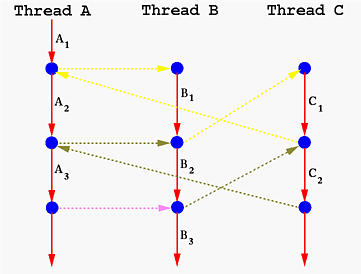

|
- Do not have the master-slave relationship between a caller and a
called subprogram
- Can have multiple entry points, which are controlled by the
coroutines themselves
- Invocation of a coroutine is called a resume
instead of a call
- Only one coroutine is actually in execution at a time
 |